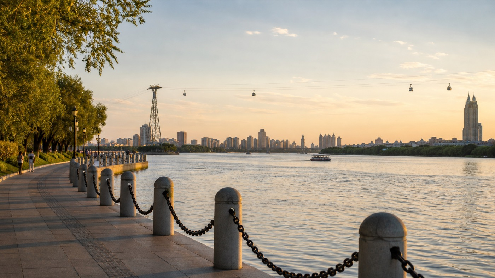
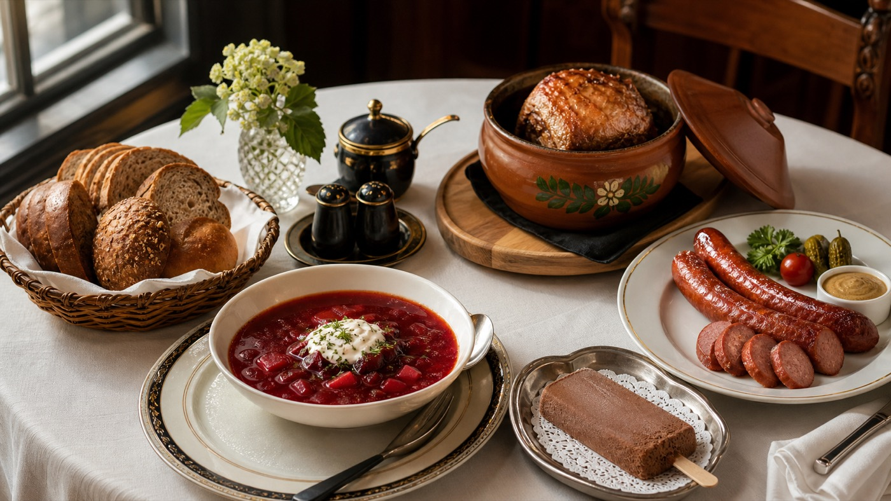

HARBIN GUIDE
HARBIN
Summer Guide
Curated for 芋圆 & 妈妈TRIP OVERVIEW
一份不像攻略的攻略：慢一点、少一点、但每一步都更确定。
MAP OVERVIEW
酒店、老街、江边、太阳岛，全部围绕一条轻松动线展开。
点击下方地点卡片，路线会在地图中高亮。
RESTAURANT GUIDE
每个饭点都给选择，而不是替你锁死一家店。
小红书高赞 Tips
SHOPPING GUIDE
伴手礼只买确定会吃的。高级感来自克制，不来自塞满行李箱。
TRAVEL TIPS
天气、穿搭、人流、交通、分量，一页就够。
旅行回忆
5 Days · 9 Places · 8 Restaurants · 2 Ferries · 1 Cable Car · One Summer in Harbin

